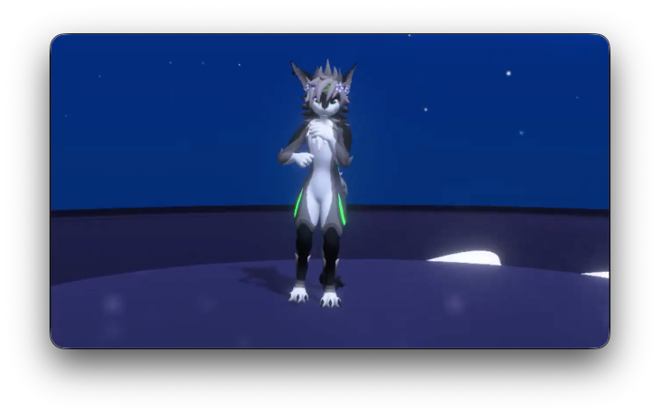
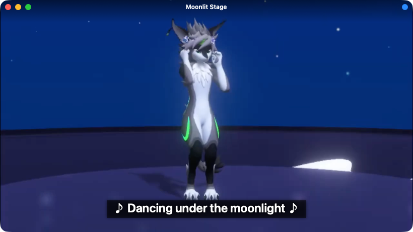

The whole picture is the seek bar.
Right-drag sideways to scrub and up or down for volume, or swipe with two fingers. Long videos pick up where you stopped.
Free for Mac · macOS 13 and later
Reel is a tiny, always-on-top player that's all picture and no clutter. Park it in a corner, keep working, and let your playlists, YouTube videos and favourite clips play.
Latest version · about 10 MB · updates itself · Apple Silicon


Stays out of your way
The video fills the whole window, title bar included, and the controls only appear while your mouse moves. Shrink it far smaller than other players; it keeps the video's shape and stays parked in its corner, floating above everything else.
Playlists
Click the playlist's name, or swipe with two fingers, to glide over to all your playlists. Pick one and it's ready; nothing starts until you choose a track.
.reel files. A friend double-clicks one and it just plays; one click saves it.Drag, drop, paste
Drag a file, a folder or a link over Reel and the playlist opens so you can aim. On the video it plays straight away; on the playlist it lands exactly where you let go. ⌘V works the same, going wherever your pointer is.
.reel files ask first: play without saving, save as a new playlist, or add to the one you're viewing.Watching
Right-drag sideways to scrub and up or down for volume, or swipe with two fingers. Long videos pick up where you stopped.

Subtitle files, subtitles inside MKV and MP4 files, and YouTube captions; remembered for each track. Switch languages and commentary tracks too.
Plays almost anything
Formats macOS can't play go through Reel's built-in decoder, using your Mac's video hardware. Nothing to convert, nothing else to install.
Shortcuts
For Macs with Apple Silicon (M1 and later) on macOS 13 Ventura or newer.
Download ReelPrefer Terminal? curl -fsSL https://raw.githubusercontent.com/kaioker/reel/main/install.sh | zsh